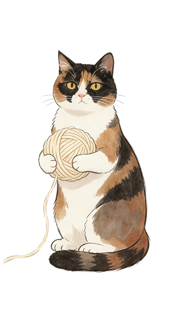

正常（术后 1–2 周，激素回落）：易哭、烦躁、没精神、失眠——别急着让她"振作"。
要警惕（该就医）：低落持续超 2 周、严重失眠吃不下、有自伤念头、幻觉或异常麻木。
帮她从"这件事"里暂时抽离，别安排消耗精力的大活动。
做法要点：少油少盐、温热软烂，一次熬一锅分装，想吃随时热。
| 目的 | 食材 |
|---|---|
| 补铁补血 | 猪肝 · 鸭血 · 瘦肉 · 牛肉 · 菠菜 · 黑木耳 · 红枣 · 桂圆 |
| 优质蛋白 | 鸡蛋 · 牛奶 · 鱼虾 · 豆腐 · 豆浆 |
| 温和进补 | 鸡汤 · 排骨汤 · 山药 · 莲子 · 枸杞 |
正常：类似月经量或更少，3–7 天逐渐减少，颜色鲜红 → 暗红 → 咖啡色。
7–8 周人流，很多人出血量不大，只有少量血丝也正常。
| 天 | 早餐 | 午餐 | 晚餐 | 加餐 |
|---|---|---|---|---|
| 周五 | 小米山药粥 | 鸡蛋羹+软饭 | 番茄龙须面 | 温牛奶 |
| 周六 | 红枣桂圆粥 | 番茄炒蛋 | 鸡丝小米粥 | 红糖姜枣茶 |
| 周日 | 南瓜燕麦粥 | 猪肝菠菜汤 | 青菜瘦肉面 | 蒸苹果 |
| 周一 | 红豆红枣粥 | 香菇滑鸡 | 西兰花炒木耳+蒸蛋 | 桂圆枸杞茶 |
| 周二 | 燕麦牛奶+蛋 | 牛肉炖山药 | 鲫鱼豆腐汤 | 温牛奶 |
| 周三 | 小米山药粥 | 清蒸鲈鱼 | 莲藕排骨汤 | 蒸苹果 |
| 周四 | 鸡蛋羹+蒸苹果 | 山药排骨汤 | 虾仁蒸蛋+粥 | 红糖姜枣茶 |
第 8 天起可逐步恢复日常饮食，但仍忌生冷辛辣、不同房不盆浴。
| 类别 | 买什么 |
|---|---|
| 主食杂粮 | 小米 · 大米 · 燕麦片 · 山药 · 南瓜 · 红豆 · 莲子 · 百合 · 红枣 · 桂圆 · 黑芝麻 · 细面条 |
| 蛋奶 | 鸡蛋 · 纯牛奶 · 无糖豆浆 |
| 肉鱼 | 猪里脊 · 猪肝 · 牛肉 · 鸡腿 · 鲫鱼 · 鲈鱼/鳕鱼 · 排骨 · 虾仁 |
| 蔬菜菌菇 | 菠菜 · 番茄 · 小油菜 · 西兰花 · 香菇 · 胡萝卜 · 黑木耳 · 豆腐 · 玉米 · 莲藕 |
| 补血调味 | 红糖 · 枸杞 · 生姜 · 大葱 · 盐 · 生抽 · 香油 · 料酒 · 白胡椒 |
术后 2 周左右复查 B 超，看宫腔恢复、是否流干净。一定别漏，提前一天提醒她，尽量陪她去。